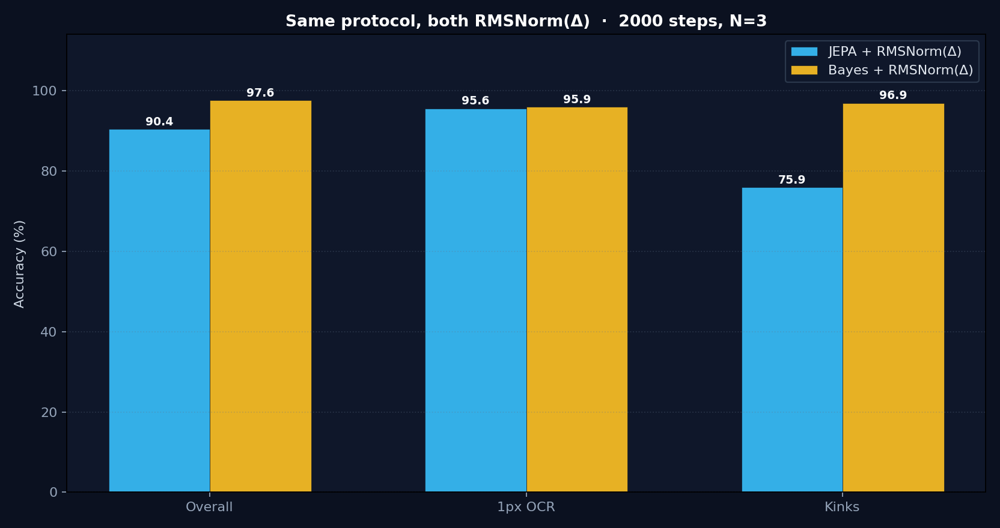
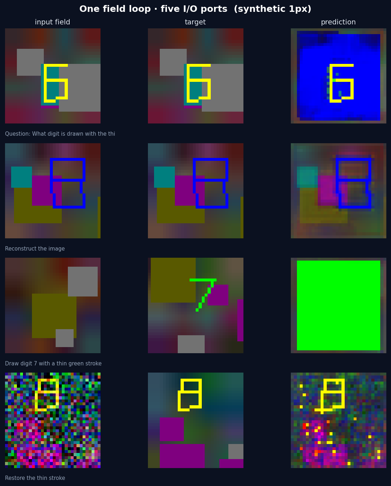

超越“单向静态 Token 化”与纯 JEPA 距离：基于自顶向下预测编码与不确定度感知的多模态主动推理框架
当前主流视觉语言模型（如 Qwen-VL、LLaVA、MoonViT 等）本质上遵循“See Once $\to$ Think Many Times”的单向前馈范式：高分辨率图像在初始阶段被固定的 ViT Patch 卷积硬性切碎、降采样为一串静态 Token，随后注入大语言模型。在此过程中，视觉编码器输出一次即宣告生命周期终结，LLM 只能被动阅读压缩后的静态表征，无法在后续的多步思考中反向回溯、重新聚焦或修饰视觉画布。
• 单向前馈：图像 $\to$ Patch Tokens $\to$ LLM（不可逆压缩）。
• 零反馈连接：LLM 无法反向修改底层的视觉像素或几何特征。
• 全局均匀算力：空白背景与极细线段消耗完全等价的静态 Token 预算。
• 回流密集：高级皮层（Language/PFC）到早期视皮层（V1）的反馈神经纤维数量是前向输入的 10 倍以上。
• 自顶向下先验：大脑先产生“预期”（Prior），感官输入负责“证伪”（Posterior）。
• 惊奇度驱动：只在打破预期的区域分配代谢能量与微眼动（Saccade）。
在自由能原理（FEP）中，智能体内部信念与外部物理世界通过马尔可夫毯隔离，仅通过感觉（Sensory）与行动（Active）两道边界耦合：
假设视觉观测与语言预测的均值差距均为 $|\mu_q - \mu_p| = 1$：
语言极其确信：“此处绝对没有字符”。但视觉切片清晰看到笔画。
• JEPA 误差：$L = 1$
• Bayesian Surprise：$U \propto \frac{1^2}{0.1^2} = 100$（指数级爆炸，强制重构画板）。
语言原本就在说：“这一块是复杂随机纹理，我完全不知道是什么”。
• JEPA 误差：$L = 1$（完全相同）
• Bayesian Surprise：$U \propto \frac{1^2}{10^2} = 0.01$（微不足道，保持静默）。
对第 $l$ 层第 $j$ 个切片，语言预测先验 $p_l(z_j) = \mathcal{N}(\mu^p_{lj}, \Sigma^p_{lj})$，视觉证据后验 $q_l(z_j) = \mathcal{N}(\mu^q_{lj}, \Sigma^q_{lj})$：
$$U_{lj} = D_{\mathrm{KL}}\left(q_l(z_j) \,\Vert\, p_l(z_j)\right) = \frac{1}{2}\sum_{k=1}^d \left[ \log\frac{(\sigma^p_{ljk})^2}{(\sigma^q_{ljk})^2} + \frac{(\sigma^q_{ljk})^2 + (\mu^q_{ljk} - \mu^p_{ljk})^2}{(\sigma^p_{ljk})^2} - 1 \right]$$完整贝叶斯系统不仅计算单一残差，而是解耦出两个正交的物理控制回路：
驱动视觉点场的语义特征重塑（“改变我认为那里是什么”）。
$$S_{l+1} = S_l + g(U_l) \odot \Delta \mu_l$$
$$X_{l+1} = \text{LocalMix}\left(X_l + \text{Deslice}(g(U_l)\odot \Delta \mu_l, A_l)\right)$$
驱动感知资源的自适应重分配（“改变我对那里有多确定”）。
• $\Sigma \uparrow \implies$ 触发局域超分、增加切片采样、增加思考深度；
• $\Sigma \downarrow \text{ 且 } U \to 0 \implies$ 信念收敛，提前退出。
为确保研究严格可控、步步为营，实验坚决避免一上来引入过多自由度，划分为清晰的三阶演进：
• 设定：冻结方差 $\sigma=1$，语言直接预测切片目标 $\hat{S}_l = P(H_l)$，惊奇度退化为预测误差 $U_l = \|S_l - \hat{S}_l\|_2^2$。
• 验证目标：预测误差门控能否显著击败 Baseline、Random Gate 与 Constant Gate？（50行代码即可闭环验证）。
• 设定：语言头输出 $(\mu_p, \log\sigma_p)$，视觉头输出 $(\mu_q, \log\sigma_q)$，计算解析对角 KL 散度 $U_l = D_{\mathrm{KL}}(q_l \parallel p_l)$。
• 验证目标：不确定度感知（Uncertainty-aware）在面对模糊背景与细小结构时，能否显著超越 V0 的均等 $L_2$？
• 设定：$(p, q, U)$ 全面接管下游计算控制——$U$ 驱动画板写回与 Router 重布线，$\Sigma$ 驱动局域超分与动态迭代深度（Adaptive Thinking Time）。
• 验证目标：随着跨模态交互深度 $K$ 增加，模型展现出持续扩展的推理增益。
| 消融实验组 | 操作方式 | 证伪目标（若无显著下降则说明...） |
|---|---|---|
| Shuffled Surprise | 保持 $U$ 的数值分布，但在切片间随机打乱 $U_{\pi(j)}$ | Surprise 只是普通正则标量，不具备空间与语义对应性 |
| Stop Language $\to$ Predict | 语言先验头切断 $H_l$，仅使用无条件先验 $p = \mathcal{N}(0, I)$ | Top-down 语言预期是伪命题，没有真正提供自顶向下偏置 |
| Constant Gate | 设 $g(U) = c$，使总更新能量与 Surprise 组严格一致 | 性能提升仅仅因为“多缩放了残差量” |
| Reverse Surprise | 令更新门控反转 $g_{\text{rev}}(U) = 1 - g(U)$ | 理论机制自相矛盾（抑制高惊奇反而变好） |
| Trainable vs Detached $U$ | 比较 $\operatorname{stopgrad}(U)$ 与端到端求导的差异 | 检测模型是否通过梯度 Hack 人为操纵了方差或距离 |
记录层间均值 $\bar{U}_l = \frac{1}{M}\sum_j U_{lj}$。理想动力学指征：
Surprise Spike（语言预测被打破） ➔ 视觉画板重塑 ➔ 后续层 Surprise 下降（冲突被解释消除）。
投影 $U_l(x,y) = \sum_j A_{lij} U_{lj}$。
问“左上角字符” ➔ 左上角产生 Surprise 热区；
问“右下角折线” ➔ 热区自适应转移至折线坐标。
若空间热区与语言解耦，判定自顶向下先验失败。
| 梯级 | 判定状态 | 现象与处理策略 |
|---|---|---|
| Level 0 | 机制证伪 | $\text{Surprise Gate} \approx \text{Random} \approx \text{Constant}$。立即止损，停止后续阶段。 |
| Level 1 | 控制信号成立 | V0 / V1 显著优于 Baseline、Random、Constant 与 Shuffled 消融组。 |
| Level 2 | 空间因果绑定 | 不同语言 Query 在点场上产生明确语义对应的 $U_l(x,y)$ 空间激活热区。 |
| Level 3 | 不确定度优势 | V1 高斯贝叶斯版在复杂模糊纹理中显著超越 V0 均等 $L_2$ 门控。 |
| Level 4 | 协同演化成立 | 随着交互深度 $K$ 增加，主动视觉模型展现出持续扩大的推理性能增益。 |
主对比里 JEPA 与 Bayes 都带 RMSNorm($\Delta$)，协议对齐（$\lambda=0.1$，Stiefel，topk2，2000×3）。 不再引用无 RMS 的 $76\%$ $L_2$ 旧跑。
| Acc | OCR | Kinks | |
|---|---|---|---|
| V0 JEPA + RMSNorm($\Delta$) | $90.4\pm3.1$ | $95.6$ | $75.9$ |
| V1 Bayes + RMSNorm($\Delta$) | $97.6\pm2.0$ | $95.9$ | $96.9$ |

点场 $X$ 可写、语言 $H$ 可写回，五种端口是同一个动力学的不同初值，不是五套模型：
| 端口 | 起点 | 终点 | 日常叫法 |
|---|---|---|---|
| 文生文 | $H_0=$ 文本，$X_0=$ 空场 | 读 $H_L$ | 语言模型 |
| 图文生文 | $X_0=$ 图，$H_0=$ 问句 | 读 $H_L$ | VLM / OCR / VQA |
| 重建 | $X_0=$ 图 | 读 $X_L\to$ 像素 | 自编码 / 场复原 |
| 文生图 | $X_0=$ 噪声，$H_0=$ 描述 | 读 $X_L\to$ 像素 | T2I |
| 图生图 | $X_0=$ 图，$H_0=$ 指令 | 读 $X_L\to$ 像素 | I2I / 上色 / 去噪 |

| 端口 | 最小探针 | 状态 |
|---|---|---|
| 文生文 | 问句内含答案时 $100\%$ | 通路通（玩具） |
| 图文生文 | 专训 OCR $96\%$；与像素头混训 $\sim40\%$ | 已测 |
| 重建 | 1px 折线 Dice $1.0$；混训 PSNR $\sim21$ | 已测 |
| 图生图 | 噪声上能找回笔画，PSNR $\sim13$ | 探针通过 |
| 文生图 | 先会颜色、字形未长出，PSNR $\sim6$ | 尚未过 |
“看见（Perceive）从来不是单向照相，而是由语言预期、观察证据与惊奇度驱动的主动信念构造过程。”
本项目以全分辨率点场 $X$ 为持久工作记忆，以瞬态切片 $S$ 为马尔可夫毯感觉边界，以语言状态 $H$ 为自顶向下先验预测器，以贝叶斯惊奇度 $U = D_{\mathrm{KL}}(q_l \parallel p_l)$ 为信念修正量，建立了一个紧凑、自洽、高度可证伪的双流协同演进范式。它将确定性 JEPA 作为零阶极限包容其中，更为构建真正具备类脑主动推理能力的新一代通用多模态智能体奠定了坚实的理论基石。